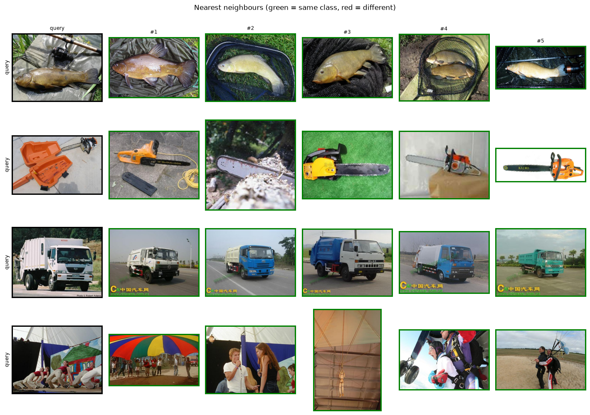

07 · Embeddings & retrieval
How similar are two images? — DINOv2 vs SigLIP nearest-neighbour search
The task
Most of this curriculum predicts labels. This module predicts a vector: an embedding that places similar images near each other in a high-dimensional space. That single idea underpins reverse image search, deduplication, clustering, recommendation, anomaly detection, and few-shot recognition — none of which need a classifier head. To “classify” you just look at your neighbours.
The workflow:
- Embed every gallery image to an L2-normalised vector.
- Embed a query the same way.
- Rank gallery vectors by cosine similarity (a dot product) and return the nearest.
Two kinds of embedding
| Model | Trained on | Signal it captures |
|---|---|---|
| DINOv2 | Images only, self-supervised (no labels) | Visual structure, parts, texture, shape — emerges purely from the data |
| SigLIP 2 | Image–text pairs, contrastive | Semantics aligned to language — “what you’d call it” |
DINOv2 learns by making different augmented views of the same image agree; it never sees a label, yet produces features so strong that a linear probe rivals supervised training. SigLIP learns from captions, so its space is organised the way language groups things. Both give excellent retrieval — the right choice depends on whether you want visual or semantic similarity.
Results
A real metric, not just pictures: we embed a balanced Imagenette gallery and measure how often the nearest neighbours share the query’s class — using no labels at search time.
Image retrieval (Imagenette)
| Model | Type | License | Recall@1 (%) | Precision@5 (%) | Latency (ms) | FPS |
|---|---|---|---|---|---|---|
| SigLIP 2 Base | image-text | Apache-2.0 | 99.8 | 99.2 | 20.51 | 48.8 |
| DINOv2 Base | self-supervised | Apache-2.0 | 99.3 | 98.8 | 19.45 | 51.4 |
Retrieval on 600 Imagenette images (60/class). Recall@1 = nearest neighbour shares the class; Precision@5 = fraction of top-5 that do. No labels used at search time — purely embedding similarity. Latency on NVIDIA GeForce RTX 3090 Ti | 24.0 GB | sm_86 | torch 2.11.0+cu128 / CUDA 12.8. Figure uses DINOv2 Base.

- Search beats training, for free. Both embedders retrieve the correct class >99% of the time (Recall@1) with no classifier and no labels at query time — add a new class by just dropping its images into the gallery.
- Self-supervised is competitive with image-text. DINOv2 (never saw a single label or caption) trails SigLIP 2 by only a few tenths of a point here — a striking result for a model trained purely on images.
- This is how you’d handle an open, growing catalogue — products, faces, defects — where retraining a classifier per new item is impractical.
Where retrieval fails
- Fine-grained distinctions — near-duplicate categories (specific dog breeds, product variants) can blur in a general embedding; specialised/fine-tuned embeddings help.
- Gallery quality & scale — retrieval is only as good as what’s indexed; at millions of items you need an ANN index (FAISS) and recall/speed trade-offs appear.
- Domain gap — embeddings trained on web images underperform on medical, satellite, or industrial imagery without adaptation.
Reproduce
uv sync --group dev
uv run python modules/07-retrieval/run.py --per-class 60